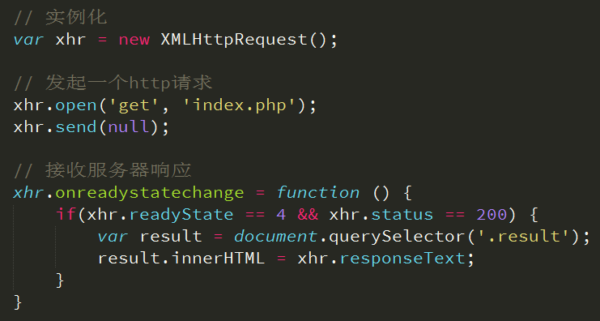
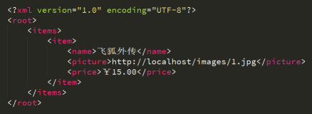

概念
我记得W3C是这么说的：AJAX 是一种在无需重新加载整个网页的情况下，能够更新部分网页的技术。（其实我更喜欢使用angular中的SPA来做这个。）
什么是同步交互
比如我们用户登录，我们输入用户名，密码之后，点击登陆发送一个请求给服务器，服务器接收到请求之后，会对请求进行处理，这个处理需要一个过程，在处理的过程当中，客户端一直处于等待的状态，如果服务器处理完毕，将处理结果返回给浏览器（一般返回的是一个页面），返回的结果会把之前的登陆页面直接覆盖掉，我们说这种交互方式，就是同步的交互方式。
什么是异步交互
比如我们用户注册，当我们输入用户名之后，随着界面会给我们提示，该用户名是否存在，在这样的一个过程当中，我们实际上是已经跟服务器进行交互了的，否则怎么会提示该用户已经存在了勒。我们可以这么理解异步交互，与同步进行一个对比，异步交互时，当发送一个请求，服务器接收到请求之后，对请求进行处理，在处理的过程当中，用户还可以做其它的事情，当服务器处理请求完成之后，会给客户端一个响应，响应的数据不会覆盖原来的页面，这样我们就能给用户一个完好的用户体验，这个就是我们说的：页面不刷新，就可以能够与服务器进行动态的数据交互。在我们显示的开发过程当中，有很多这样的实际案例。
ajax

- 请求(HTTP请求3个组成部分与XMLHttpRequest方法的对应关系)
1. 请求行
xhr.open（'get','index.php'）;//Async = false,如需使用 async=false，请将 open() 方法中的第三个参数改为 false
2. 请求头
xhr.setRequestHeader('Content-Type','text/html');
get请求可以不设置
3. 请求主体
xhr,send(null);
- 响应
HTTP响应是由服务端发出的，作为客户端更应关心的是响应的结果。
HTTP响应3个组成部分与XMLHttpRequest方法或属性的对应关系。
由于服务器做出响应需要时间（比如网速慢等原因），所以我们需要监听服务器响应的状态，然后才能进行处理。
```javascript
xhr.onreadystatechange = function () {
if(xhr.readyState == 4 && xhr.status == 200) {
var result = document.querySelector('.result');
result.innerHTML = xhr.responseText;
}
}
```
onreadystatechange是Javascript的事件的一种，其意义在于监听XMLHttpRequest的状态
1. 获取状态行（包括状态码&状态信息）
xhr.status;//状态码
xhr.statusText //状态信息
2. 获取响应头
// 获取指定头信息
xhr.getResponseHeader('Content-Type');
// 获取所有响应头信息
xhr.getAllResponseHeaders();
3. 响应主体
xhr.responseText;
xhr.responseXML;
我们需要检测并判断响应头的MIME类型后确定使用request.responseText或者request.responseXML

API详解
xhr.open() 发起请求，可以是get、post方式
xhr.setRequestHeader() 设置请求头
xhr.send() 发送请求主体get方式使用xhr.send(null)
xhr.onreadystatechange = function () {} 监听响应状态
xhr.readyState = 0时，UNSENT open尚未调用
xhr.readyState = 1时，OPENED open已调用
xhr.readyState = 2时，HEADERS_RECEIVED 接收到头信息
xhr.readyState = 3时，LOADING 接收到响应主体
xhr.readyState = 4时，DONE 响应完成
xhr.status表示响应码，如200
xhr.statusText表示响应信息，如OK
xhr.getAllResponseHeaders() 获取全部响应头信息
xhr.getResponseHeader('key') 获取指定头信息
xhr.responseText、xhr.responseXML都表示响应主体
注：GET和POST请求方式的差异
1、GET没有请求主体，使用xhr.send(null)
2、GET可以通过在请求URL上添加请求参数
3、POST可以通过xhr.send('name=itcast&age=10')
4、POST需要设置
xhr.setRequestHeader('Content-Type','application/x-www-form-urlencoded');
5、GET效率更好
6、GET大小限制约4k，POST则没有限制（在服务中post比get危险）
案例
案例1：
做一个简单的与服务器进行交互的案例 主要强调使用get方式提交，能够简单与服务器进行通讯
第一步：我们需要创建一个对象，用于跟服务器进行交互
这个对象叫做xmlHttpRequest，这个对象是浏览器给我们提供的
目的就是用来跟服务器进行数据交互的.
var xhr=new XMLHttpRequest;
第二步：我需要跟服务器进行数据交互，这个时候我需要跟服务端的资源建立
一个连接，xhr ，提供了一个方法，叫做open
xhr.open("get","get.php",true);
我们需要发送数据给服务器，我们应该调用xhr提供的send 方法.
如果不需要发送数据，我们这个方法也不能省略，我们可以传递一个null过去
xhr.send(null);
设置一个回调函数，当服务器端有数据返回的时候会调用这个回调函数与服务器交互的过程当中，服务器会不断的给客户端返回状态，如果有状态返回，则使用该属性readyState 接收。readyState==4 代表服务器已经响应完毕status 服务器端返回给客户端的一个状态码，如果返回的是200代表响应成功。reponseText 用来接收服务器端返回的数据。
reponseText 用来接收服务器端返回的数据。
xhr.onreadystatechange = function () {
//说明响应成功.
if(xhr.readyState == 4 && xhr.status == 200){
var data = xhr.reponseText;
alert(data);
}
}
案例2：
做一个简单的与服务器进行交互的案例 主要强调使用 post方式提交，能够简单与服务器进行通讯 ，注意：我们使用post 提交的时候，必须给服务器发送一个请求头，Content-Type', 'application/x-www-form-urlencoded，这个是http 协议的规定。
var xhr=new XMLHttpRequest;
第二步：我需要跟服务器进行数据交互，这个时候我需要跟服务端的资源 建立一个连接，xhr ，提供了一个方法，叫做open
xhr.open("post","post.php",true);
如果是post 方式提交，必须设置请求头
xhr.setRequestHeader('Content-Type', 'application/x-www-form-urlencoded');
我们需要发送数据给服务器，我们应该调用xhr提供的send 方法.如果不需要发送数据，我们这个方法也不能省略，我们可以传递一个null过去
xhr.send("username=zhangsan&password=1234");
设置一个回调函数，当服务器端有数据返回的时候会调用这个回调函数与服务器交互的过程当中，服务器会不断的给客户端返回状态，如果有状态返回，则使用该属性readyState 接收。
readyState==4 代表服务器已经响应完毕
status 服务器端返回给客户端的一个状态码，如果返回的是200，就代表响应成功了
reponseText 用来接收服务器端返回的数据。
xhr.onreadystatechange = function () {
//说明响应成功.
if(xhr.readyState == 4 && xhr.status == 200){
var data = xhr.reponseText;
alert(data);
}
}
jQuery 中的Ajax
开发中谁还会去写原生ajax？jQuery为我们提供了更强大的Ajax封装
$.ajax({}) 可配置方式发起Ajax请求
$.get() 以GET方式发起Ajax请求
$.post() 以POST方式发起Ajax请求
$(‘form’).serialize() 序列化表单（即格式化key=val&key=val）
url 接口地址
type 请求方式
timeout 请求超时
dataType 服务器返回格式
data 发送请求数据
dataFilter 在请求成功之后调用。传入返回的数据以及 “dataType” 参数的值。并且必须返回新的数据（可能是处理过的）传递给 success 回调函数。
beforeSend: function () {} 请求发起前调用
success 成功响应后调用
error 错误响应时调用
complete 响应完成时调用（包括成功和失败）
回调函数
如果要处理$.ajax()得到的数据，则需要使用回调函数：beforeSend、error、dataFilter、success、complete。